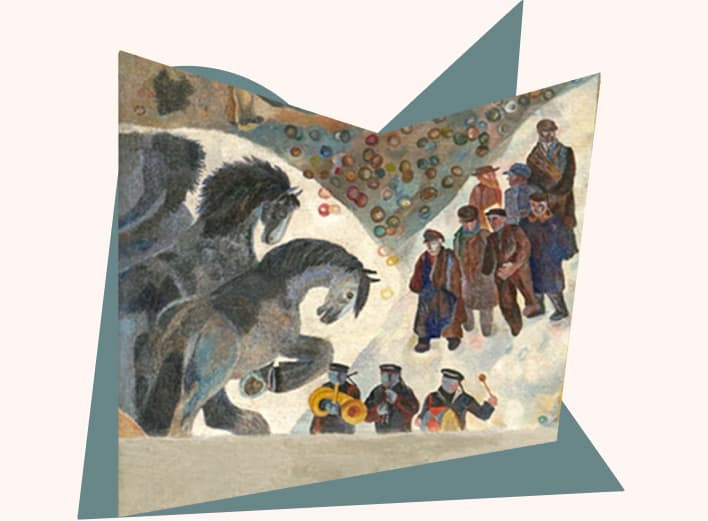
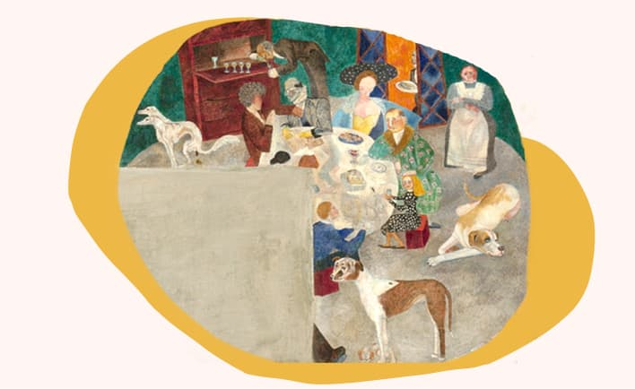
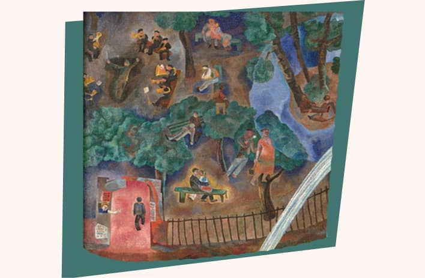
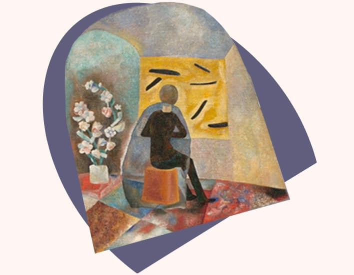
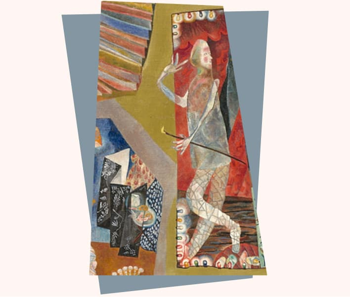
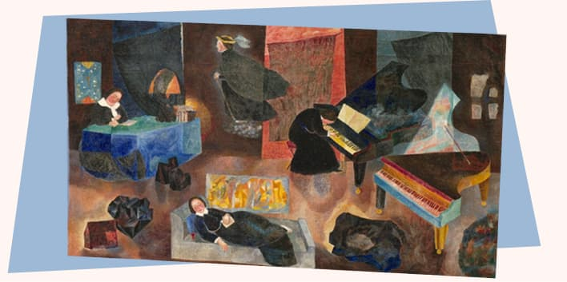
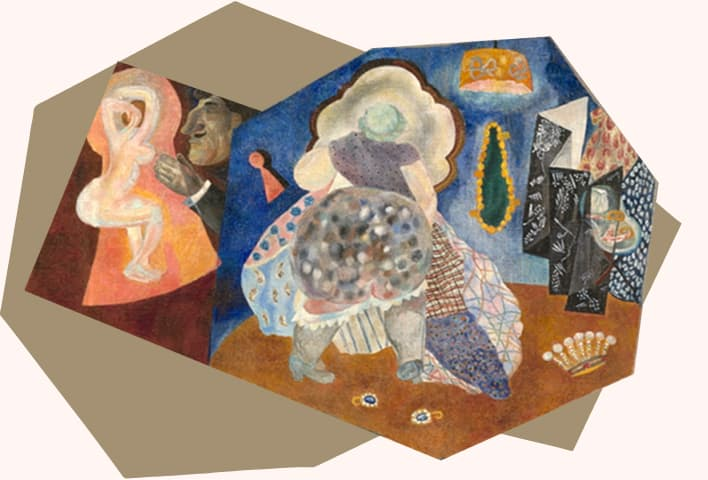
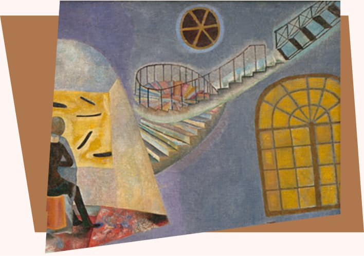

Добро пожаловать в наш необычный «Дом в разрезе»!
Самое загадочное произведение в собрании Ярославского художественного музея. Неординарны и судьба полотна, и его сюжет, и сама жизнь авторов и персонажей картины...
Произведение было обнаружено сотрудником Ярославского художественного музея в петергофской квартире Татьяны Николаевны Глебовой (Ленинградская область) при просмотре работ из ее наследия в 1989 г. Среди папок с графическими листами, холстами на подрамниках в кладовке был найден рулон с холстами.
Внимание ярославского искусствоведа привлек холст, разрезанный на три части (размеры частей: 134×150; 47,5×59,5; 75,5×61; при их соединении общий размер — 153×197). По нижнему краю читалась утрата, т.к. композиция не имела логического завершения.
Тайны
В одной из публикаций о П.Н. Филонове были найдены строки с упоминанием работы Т.Н. Глебовой и А.И. Порет:
«На юбилейную выставку будут приняты работы лишь тех художников, кто получит от музея приглашение принять в ней участие. Это приглашение из многих десятков моих товарищей — учеников получили только Миша и Порет с Глебовой. < ...> 22-го вечером я уговорил также Порет и Глебову дать их вещи, и мы отобрали 6 работ; одна вещь — „Разрез нашего дома“, — писанная ими обеими, представляет чуть не все квартиры их дома и характеристику их жильцов, живущих как в норах. По улице перед домом везут красный гроб».

Жители
Алиса Ивановна Порет. Родилась в Петербурге в семье главного врача Путиловского заводаю, француза по происхождению Ивана Порета и шведки Цецилии Линдстрем (в замужестве Порет). В 1910-е гг. училась в гимназии Святой Анны (Анненшуле, нем. Annenschule) в Петербурге—Петрограде. В 1920 г. служила в Рабоче-крестьянской инспекции (Рабкрин) и в том же году поступила в Рисовальную школу при Обществе поощрения художеств в Петрограде. В 1921 г. без экзаменов перевелась в Государственные свободные художественные учебные мастерские (с августа 1921 г. — ВХУТЕМАС), училась у А.И. Савинова и К.С. Петрова-Водкина.

Прогулки по Ленинграду
Дом А.И. Порет и Т.Н. Глебовой. С 1927 по 1933 гг. Татьяна Глебова жила у своей подруги Алисы Порет. Дом художниц на набережной Фонтанки был одним из важных адресов творческих встреч, своеобразным литературно-музыкальным и художественным салоном.

Художники
АВАНГАРД — условное наименование различных художественных направлений в искусстве XX в., для которых характерно стремление к коренному изменению принципов и традиций художественной практики — кубизм, футуризм, экспрессионизм, дадаизм, сюрреализм, абстрактное искусство, аналитическое искусство, лучизм, конструктивизм, кубофутуризм, супрематизм, концептуализм, постмодернизм и др. Авангардисты стремятся к новым средствам выражения и формам произведений.

Поэты
Татьяна Глебова и Алиса Порет познакомились с Даниилом Хармсом в 1927 г. в Детском отделе Госиздата, который был своеобразным клубом и творческой мастерской поэтов и писателей ОБЭРИУ.
«В первые годы своего существования он был учреждением талантливым, весёлым и озорным, — вспоминал Николай Чуковский — <...> То была эпоха детства детской литературы, и детство у неё тоже было весёлое. Детский отдел помещался на пятом этаже Госиздата, и весь этаж ежедневно в течение всех служебных часов сотрясался от хохота. Некоторые посетители Детского отдела до того ослабевали от смеха, что кончив свои дела, выходили на лестничную площадку, держась за стены, как пьяные...» Там постоянно шёл импровизированный спектакль авторов детских журналов «Чиж» и «Ёж» и царила атмосфера непрекращающейся буффонады и розыгрышей. Разыгрывался спектакль и на других площадках.

Музыка
Музыкальные темы «Дома в разрезе», перетекая одна в другую, соединяются лестницами, как живописными ступенями звукоряда. Классическая музыка «Дома» противостоит привычным музыкальным фактурам города 1920-х—1930-х. Дом и его обитатели живут вразрез с реальным временем, вразрез с музыкой, которая звучит вне его (от садовой музыки духового оркестра (лето) и до звуков похоронной процессии (зима)).

Игры
Из воспоминаний Алисы Порет:
Днем мы всегда писали маслом, потом обедали и гуляли, а по вечерам, если не было интересного концерта, принимали гостей. Народу у нас бывало много, подавали мы к столу только чай с очень вкусными бутербродами и сладким, а водки у нас не было никогда, и с этим все мирились. Д.И. Хармс и А.И. Введенский были нашими основными подругами. Больше всего мы любили делать с ними фильмы. Киноаппарата у нас не было, мы делали просто отдельные кадры из серий «Люди на фоне картин», «Неудачные браки», «Семейные портреты» или снимки «на чистую красоту». Мы брали историю искусств и ставили живые картины, с большим тщанием, а потом все это снимал наш друг П.П. Мокиевский. Нам иногда удавались фото, которые очень многие принимали за картины неизвестных мастеров.

1931 год
Из воспоминаний Татьяны Глебовой:
...Я знала Филонова и училась у него. Знала Хармса, Введенского, Друскина и других обэриутов. Знала учеников Малевича. И прочих представителей интеллигенции в изобразительном, музыкальном и других искусствах. От них я получила чувство современности, постоянное безостановочное движение в исканиях новых форм, выражения определенных мыслей. Могу ли я передать весь сложный комплекс пережитого бурного времени, полного трагедий, ужасов, бедствий и постоянного напряжения для сохранения внутренней правды ...

